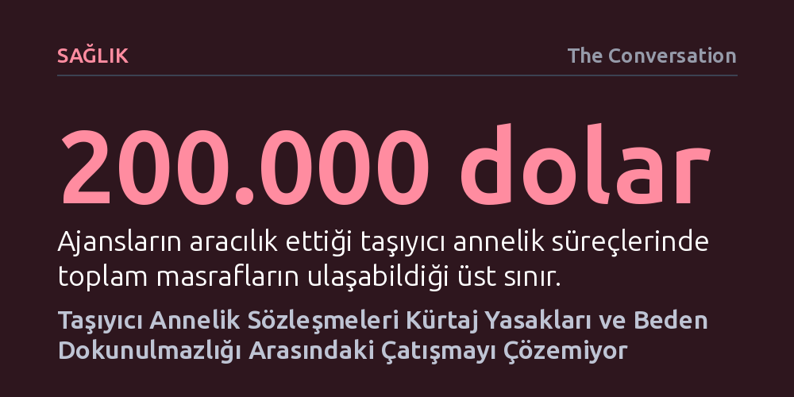

SAGLIK · The Conversation · 2026-10-10
Taşıyıcı annelik sözleşmeleri, fetüsteki sağlık sorunları ve eyaletlerin kürtaj yasakları karşısında velayet ile beden dokunulmazlığı çatışmasını çözmekte yetersiz kalıyor. Yargı kararları, sözleşme maddelerinin taşıyıcı anneyi kürtaja zorlayamadığını ve cenin hakları tartışmalarının tüm üreme hukuku dengesini bozduğunu gösteriyor.
Taşıyıcı annelikte her krizin sözleşmeyle çözülebileceği varsayımını çürüterek, sertleşen kürtaj yasaklarının ebeveynlik hakları ile kadın bedeninin özerkliği arasındaki hassas dengeyi nasıl çökerttiğini gösteriyor.

Kaliforniya’da yaşayan bir çift ile taşıyıcı anne McKenna West arasında yapılan anlaşma, fetüse ağır bir kalp rahatsızlığı teşhisi konulmasıyla büyük bir hukuki krize dönüştü. Biyolojik anne ve baba gebeliğin sonlandırılmasını talep ederken, West kürtaj yaptırmayı reddetti. Hamileliğini sürdürmek isteyen West, hem ailesinin desteğini almak hem de doğacak bebeğin gerekli tıbbi bakıma kavuşabileceğine inandığı Teksas’a taşındı. West’in bu tercihinde, Teksas’ın kürtajı neredeyse tamamen yasaklamış olması da belirleyici bir güvence sundu.
Bebeğin doğumundan hemen önce taraflar arasındaki uyuşmazlık mahkemelere taşındı. Kaliforniyalı çift bebeğin yasal ebeveynleri olduklarına dair mahkeme kararı alırken, Teksas Başsavcılığı ise ebeveynlerin hayat kurtarıcı ameliyata onay vermeyeceğini öne sürerek bebeğin tedavi altına alınması için devreye girdi. West, ebeveynlerin tedaviyi kabul etmesi şartıyla velayet talebinden vazgeçmeye hazır olduğunu bildirdi. Ancak yerel mahkemeler yasal ebeveynlerin haklarını onayladı. West, yüksek yargıya başvururken sadece "37 hafta boyunca taşıdığı ve kurtarmak için savaştığı çocuk hakkında daha fazla bilgi edinmek" istediğini belirtse de Yüksek Mahkeme davaya müdahale etmeyi reddetti ve West’in bebek üzerinde hiçbir hakkı kalmadı.
Modern taşıyıcı annelik uygulamaları yaklaşık elli yıldır yazılı sözleşmeler üzerinden yürütülüyor. Bu metinler genellikle ebeveynlik haklarını, sağlık sigortasını, masrafların karşılanmasını ve fetüste ciddi bir anormallik görülmesi durumunda kürtaj ihtimalini en ince ayrıntısına kadar düzenliyor. Sürecin tarafları bağımsız avukatlarca temsil ediliyor ve ajansların dahil olduğu anlaşmalarda maliyetler yüz binlerce doları bulabiliyor. Bugüne kadar binlerce bebeğin bu yolla dünyaya gelmesi sistemin pürüzsüz işlediği izlenimini verse de, kriz anlarında sözleşmelerin bağlayıcılığı ciddi bir çıkmaza giriyor.
Nitekim benzer bir çatışma 2012 yılında Crystal Kelley vakasında da yaşanmıştı. Fetüsünde ağır anomaliler tespit edilen Kelley, genetik ebeveynlerin kürtaj talebini reddetmiş ve ebeveynlik haklarını koruyabileceği başka bir eyalete taşınarak bebeği dünyaya getirmişti. Hukukçular, taşıyıcı annelik sözleşmelerinde yer alan kürtaj şartlarının mahkemelerde zorla uygulanamayacağına dikkat çekiyor. Hiçbir mahkeme bir kadını kendi rızası dışında kürtaja zorlayamayacağı için, sözleşmeler kağıt üzerinde ne yazarsa yazsın kadının beden dokunulmazlığı ilkesi karşısında yetersiz kalıyor.
Öte yandan hamile kadının bedensel özerkliği geçmişte de hiçbir zaman mutlak sayılmadı. Kürtajın anayasal bir hak olduğu dönemlerde bile bazı eyalet mahkemeleri, fetüsü koruma gerekçesiyle kadınların rızası hilafına sezaryen doğum kararları verebilmişti. Taşıyıcı annelikte de ebeveynlerin fetüsü korumaya yönelik tıbbi talepleri ile taşıyıcının kendi bedeni üzerindeki kontrolü arasındaki sınır çizgisi her zaman belirsizliğini koruyor.
ABD Yüksek Mahkemesi’nin 2022 tarihli Dobbs kararıyla federal kürtaj hakkını lağvetmesi, taşıyıcı annelik hukukunu doğrudan sarstı. Kürtaj düzenlemelerinin eyaletlerin inisiyatifine bırakılması, eyaletler arasında derin hukuki uçurumlar yarattı. Örneğin Teksas gibi kürtajı neredeyse tamamen yasaklayan eyaletlerde, bir taşıyıcı annelik sözleşmesine konulan kürtaj maddeleri hukuken baştan hükümsüz hale geliyor. Taşıyıcı anne, sözleşmeyi imzaladığı eyaletten kürtaj yasağının bulunduğu bir eyalete geçtiğinde hukuki denklemin tüm dengeleri değişiyor.
Bu dönüşümün en radikal boyutu ise giderek zemin kazanan cenin kişiliği yaklaşımıyla ortaya çıkıyor. Doğmamış bir cenine veya embriyoya doğmuş bir insanla aynı yasal hakları tanıyan bu öğreti, taşıyıcı annelik sözleşmelerinin temelini tehdit ediyor. Nitekim Florida’da bir yargıç, ebeveynlerin haklarını tanımasına rağmen taşıyıcı anneliğin anayasaya uygunluğunu cenin hakları zemininde sorguladı. Muhafazakar kanatta taşıyıcı anneliğin sınırlandırılması veya tamamen yasaklanması yönündeki girişimler artarken, bu yaklaşım yalnızca taşıyıcı anneliği değil tüp bebek tedavilerini de hukuken imkansız kılma riski taşıyor.
Taşıyıcı annelik etrafındaki tartışmalar, temelde iki meşru hakkın uzlaştırılması zor çatışmasından besleniyor. Bir tarafta çocuk sahibi olamayan bireylerin aile kurma arzusu ve bu amaçla yaptıkları devasa maddi ve manevi yatırımlar bulunurken; diğer tarafta dokuz ay boyunca gebeliği taşıyan kadının kendi bedeni ve sağlığı üzerindeki vazgeçilmez karar hakkı yer alıyor. Bazı eleştirmenler bu süreci bir tür çocuk ticareti olarak nitelendirip tamamen yasaklanmasını savunurken, destekçiler bunun karşılıklı rızaya dayalı meşru bir aile kurma yöntemi olduğunu vurguluyor.
Yüksek Mahkeme’nin West davasına müdahale etmemesi bu çelişkilerin hiçbirini çözüme kavuşturmuş değil. Sözleşmeler mali detayları ve standart süreçleri başarıyla yönetebilse de, fetüsün yaşamı ve annenin bedeni söz konusu olduğunda en temel ahlaki ve hukuki sorular yanıtsız kalıyor. Cenin hakları doktrininin giderek genişlediği yeni hukuki ortamda, ne ebeveynlerin beklentileri ne de taşıyıcı annelerin bedensel hakları artık mutlak bir güvenceye sahip.